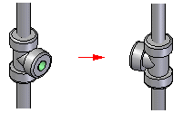
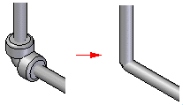

Piping Route command bar
- Main Steps
-
- Options
-
Accesses the Piping Options dialog box.
- Select Path Step
-
Specifies the path that you want to create the piping route along.
- Assign Fittings/Attributes Step
-
Assigns pipe fittings to the route.
- Pipe Attributes Step
-
Displays the Piping Attributes dialog box that edits the attributes for the selected pipe.
- Preview/Finish/Cancel
-
This button changes function as you move through the feature construction process. The Preview button shows what the constructed feature will look like, based on the input provided in the other steps. The Finish button constructs the feature. After previewing or finishing the feature, you can edit it by re-selecting the appropriate step on the command bar. The Cancel button discards all input and exits the command.
- Select Path Step Options
-
- Select
-
Sets the path segment selection criteria.
-
Single—Selects a single path segment.
-
Chain—Selects a chain of path segments.
-
- Allow Gradient
-
Allows the pipes to have a gradient within the piping route.
- Maximum Gradient
-
Specifies the maximum gradient allowed in the piping route. The path segment may have a gradient between 0 and the specified number. If the segment has a gradient larger than the specified value, the pipe will not be created for the segment.
- Accept (check mark)
-
Accepts the selection.
- Deselect (x)
-
Clears the selection.
- Assign Fittings/Attributes Step Options
-
- Flip Fittings
-
Flips the selected pipe fitting.

This option is only available when you select a fitting to modify.
- Replace Fitting-Select from Standard Parts Library
-
Displays the Standard Parts dialog box so you can select a fitting to replace the selected fitting. This option is only available when you select a fitting to modify.
- Replace Fitting-Browse for Fitting
-
Displays the File Open dialog box so you can select a fitting to replace the selected fitting. This option is only available when you select a fitting to modify.
- Penetration Cut
-
Creates a pipe-to-pipe penetration cut.

This option is only available when you select a fitting to modify.
- Edit Fitting Alignment
-
Aligns the fitting along a gradient pipe route.
- Orientation
-
Specifies the angular orientation of the selected fitting with respect to the pipe centerline.
- Previous Alignment
-
Displays the previous alignment of the fitting.
- Next Alignment
-
Displays the next alignment of the fitting.
- Cancel
-
Dismisses the pipe fitting and attributes editing options, returning to the Pipe Fittings step.
- Other command bar Options
-
- Name
-
Specifies the name of the pipe.